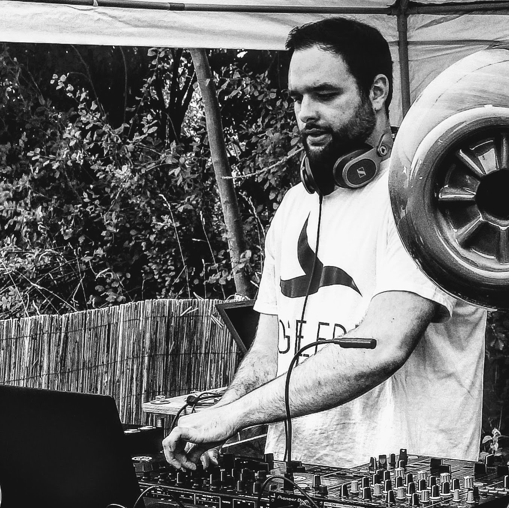
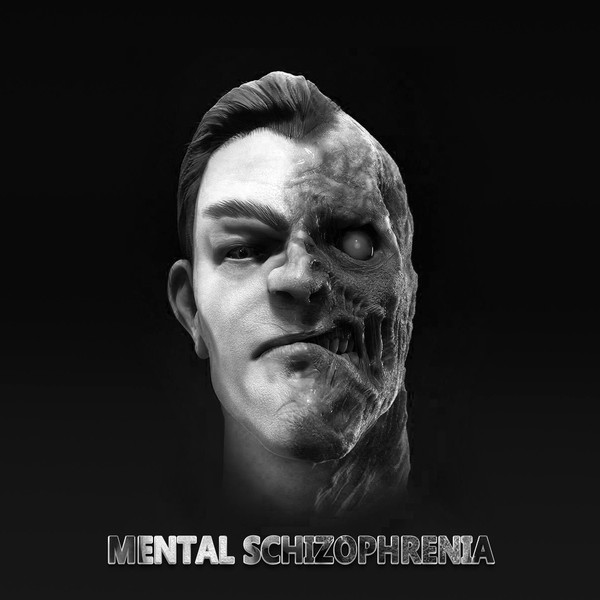

Who is Dafinchi?
Dafinchi is an upcoming electronic music producer and dj from Karlsruhe. At the moment he holds his residency in Kassel, where he hosts raves and plays at known clubs on a regular basis.

Labels

Media